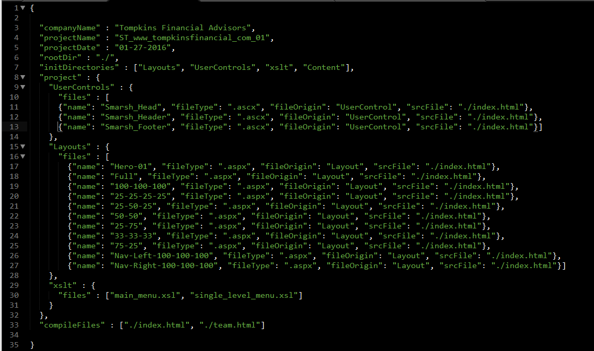

Configuration
compileConfig.json
The compileConfig.json file is used to configure the compiler prior to initializing. It contains relevant project information such as the "Company Name" , "Project Name", the date the project was started on, etc. The most imporant configuration that needs to be done is setting the root directory where the project folder will be created and setting the source file that will be used to compiled each of the different UserControls and Layout files.
-
companyName:
-
projectName:
-
projectDate:
-
rootDir:
-
initDirectories:
-
UserControls.file:
assetFile.json
Within the assetFile.json, you can create a JSON object with the asset key and it's Ektron content ID. When you specify an ek-asset="[key]", the content will be compiled with the appropriate path. This will make asset management much more maintainable and will save time with the initial configuration.
EXAMPLE:
1. Configure the assetFile.json by specifying the asset key and it's corresponding ID. In this example, we will be focusing on using the "section-about-image".

2. Once an asset and it's key has been configured in the assetFile.json, you can use the ek-asset="[key]" attribute on the desired element to automatically have the compiled source point to the appropriate id. In this example, we see which element is given this attribute.
3. Once the content is compiled, you can see that the src has been changed to the correct ID.